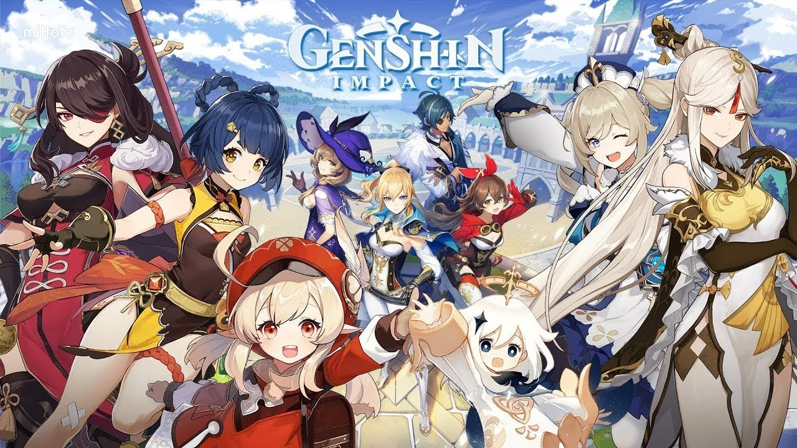

Официальный сайт игры
Выше предоставлена ссылка на официальный сайт игры где вы сможете скачать игру, следить за новостями о продолжении и выходе новых оновлений.
Фотографии Персонажи


Genshin Impact — компьютерная игра в жанре Action-adventure с открытым миром и элементами RPG, разработанная китайской компанией miHoYo Limited. Игра распространяется посредством цифровой дистрибуции по модели free-to-play, но имеет внутриигровой магазин, использующий реальную валюту. В основе Genshin Impact лежит система «гатя», называемая в игре «молитвой».
Genshin Impact была анонсирована в июне 2019 года, и её выход был намечен на 2020 на платформы Windows и iOS. Первый трейлер продемонстрировал открытый мир, сильно вдохновлённый игрой The Legend of Zelda: Breath of the Wild в плане атмосферы, внешнего вида и геймплея, значительную часть которого составляет исследование массивного открытого мира, выполнение испытаний и решение головоломок. В конце июня был запущен бета-тест. На презентации Sony ChinaJoy 2019 был анонсирован выпуск игры на PlayStation 4. Версию для Nintendo Switch анонсировали позже, 13 января 2020. Также был анонсирован выход на Playstation 5 на 28 апреля. 6 августа miHoYo официально подтвердили выход игры осенью 2020.
В начале игры игроку представляется кат-сцена, в которой показывается битва двух главных героев игры (Люмин и Итэр) с неким божеством. После кат-сцены игрок может выбрать персонажа, от лица которого он будет проходить игру. После вступительного ролика игрок впервые знакомится с миром Тейват. Игровые события начинаются через два месяца после пробуждения главного героя, когда он (или она) встречаются с Паймон, которая соглашается стать компаньоном на всё путешествие. Цель путешествия — поиск сестры или брата (в зависимости от выбора игрока) главного героя. Для этого игроку нужно путешествовать по Тейвату, и главный герой ставит задачу встретиться со всеми Архонтами.
Вас ждёт захватывающее однопользовательское приключение, где вы станете гостем из другого мира в поисках потерянного родного человека. Разгадайте тайны Тейвата и самого себя.
Летайте над необъятными долинами, исследуйте моря и озёра, покоряйте высокие горы. Даже в самых глухих местах могут скрываться удивительные тайны этого странного мира.
Путешествуйте в одиночку или сражайтесь с опасными монстрами вместе с друзьями в кроссплатформенном онлайн-режиме на 4 человека для PS4, iOS, Android и ПК.
Это не просто бездумный слэшер. Только овладев гибкой и глубокой системой элементов мира Genshin Impact можно одолеть могучих врагов и решить сложные головоломки.
Выбирайте союзников из более чем 20 персонажей (потом будет ещё больше!) – каждый с уникальными навыками, характером и стилем боя.
miHoYo анонсировали разработку над новым проектом на движке Unity в конце января 2017, спустя 3 месяца после выхода игры Honkai Impact 3rdruen. Компания заявила, что они намереваются сделать проект гораздо бо́льшего масштаба, чем предыдущие. Проектом, о котором шла речь, был Genshin Impact. По словам разработчиков, на них сильно повлияли игры Grand Theft Auto и The Legend of Zelda: Breath of the Wild. Они стремились создать уникальный проект, который бы сильно отличался от Honkai Impact 3rd с точки зрения боевой системы, квестов, случайных событий и режима исследования.
Старт Genshin Impact стал самым массовым среди китайских игр, через несколько часов после запуска количество зрителей трансляций на Twitch превысило 110 тысяч. По информации компании Sensor Tower, мобильные версии игры за неделю заработали около 60 миллионов долларов США. Быстрее чем за две недели игра принесла своим разработчикам более 100 миллионов долларов США и окупилась. За первый месяц одна только мобильная версия игры принесла своим создателям 245 миллионов долларов. За два месяца мобильная версия игры принесла своим создателям 393 миллиона долларов США, став второй самой кассовой мобильной игрой за этот период. Game Informer оценил игру на 9,25 из 10 баллов, в своей рецензии автор похвалил механику взаимодействия стихийных заклинаний персонажей и их влияние на мир, слабой стороной рецензент назвал сюжет. Рецензент из Destructoid в свой статье отметил, что самым успешным элементом игры является её боевая система, а вот мир в промежутках между заданиями кажется слишком пустым. Игра получила 7,5 балла из 10 от издания. Genshin Impact была признана игрой 2020 года по версии Google Play и Apple. Также игра была номинантом в категориях «Лучшая ролевая игра» и «Лучшая мобильная игра» на The Game Awards 2020.